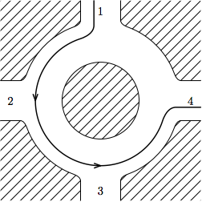
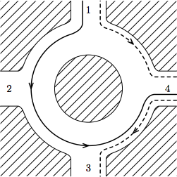

Before graduating from Awesome Programmer University, students traditionally perform certain "graduation requirements". One of these is driving around a traffic circle backwards. For most people, this is crazy enough, but as an extra challenge, you want to see if you can go backwards around the traffic circle multiple times without stopping.
The traffic circle consists of N intersections, spaced evenly around the circle. A car would normally enter the traffic circle at one intersection, and then every second, it will move to the next counter-clockwise intersection, until eventually it reaches its destination and leaves.
You have been watching cars enter and leave the traffic circle for X seconds. For each car, you record the time it enters the circle, as well as the intersections it enters and leaves at. All cars are moving counter-clockwise at the rate of 1 intersection per second. Each car you watched exited the circle before coming back to the intersection it entered at. There are multiple lanes on the traffic circle, so multiple cars can occupy the same position at the same time.
If you had planned it just right, how long could you have driven clockwise in the traffic circle during this time? You must enter the circle at some integer time >= 0, leave at time <= X, and once you leave, you are not allowed to come back. When in the traffic circle, you must travel clockwise at the rate of 1 intersection per second. You want to play it safe (well, as safe as driving backwards on a traffic circle can be), so you must never touch or pass by another car. In particular, you cannot leave the circle at an intersection at which another car is entering at the same moment, and you cannot enter the circle at an intersection at which another car is leaving at the same moment. You can choose when and where to enter and leave the circle.
The first line of the input gives the number of test cases, T. T test cases follow. The first line of any test case describes the number C of cars you observed. The second line contains two integers, X and N — the time (in seconds) for which you observed the circle, and the number of intersections on the circle. Next C lines describe the cars you have seen. Each of those lines contains three integers si, ei and ti — the intersection at which the car entered the circle, the intersection on which it left and the time at which it entered. The intersections are numbered from 1 to N, counterclockwise (that is, the intersection number 2 is the next intersection counterclockwise from number 1).
For each test case, output one line containing "Case #x: y", where x is the case number (starting from 1) and y is the maximum number of seconds you can travel on the circle. Note that y can be zero both in the case where you cannot enter the circle at all and in the case when you can enter it, but can't travel even one intersection.
Remember that you are required to enter the circle at a time expressed as an integer number of seconds — you must enter at an integer time, and thus arrive at each intersection at an integer time.
Time limit: 30 seconds per test set.
Memory limit: 1GB.
1 ≤ T ≤ 100
1 ≤ si, ei ≤ N
si ≠ ei
0 ≤ ti
Each observed car leaves the circle at time X or earlier.
3 ≤ N ≤ 10
1 ≤ X ≤ 10
0 ≤ C ≤ 10
3 ≤ N ≤ 1010
1 ≤ X ≤ 1010
0 ≤ C ≤ 1000
5 1 3 4 1 4 0 6 3 5 5 2 0 5 1 2 1 3 0 1 2 2 2 3 0 3 4 0 3 2 3 1 3 0 2 1 0 3 2 0 0 6 4 1 2 3 1 3 0
Case #1: 1 Case #2: 2 Case #3: 0 Case #4: 6 Case #5: 0
In the first sample case, we have one car, going as in the picture in the statement. There are a number of ways allowing us to travel backwards for one second — for instance, we can enter at intersection 1 at time 1 (we can't enter at time zero, because the other car is there), and travel to intersection 4 (we can't go on to intersection 3, as we would pass the other car which will be going from 3 to 4). Another option is to enter at intersection 4 at time 0, and travel to intersection 3 (and then exit).
In the second sample case, we can travel for two seconds by entering at intersection 5 at time 1, and traveling backwards to intersection 3. In the third sample case, we can't even enter the circle - there are cars at all intersections at every full second. In the fourth case there are no cars, so we can just enter the circle at any point at time 0 and travel round and round till time 6. In the fifth case we can enter the circle, but since there are only three intersections, we will always collide with the other car if we try to move to the next one.
Note: Driving against the direction of the traffic on a traffic circle is typically not a wise thing to do and may cause harm to you or other people. Google (and Google Code Jam in particular) encourages you not to try this.